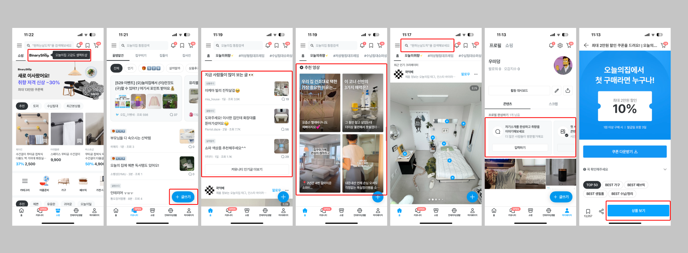

오늘의 집작성 중
인테리어 콘텐츠의 앱 유입·가입·상품 탐색을 어떤 지표로 살펴볼까?
인테리어 콘텐츠에서 상품 구매와 시공 탐색으로 이어지는 라이프스타일 플랫폼.
학습 목적영상·SNS 콘텐츠에서 앱으로 유입되고, 가입과 상품 탐색으로 이어지는 행동을 AARRR의 유입·활성화 단계로 나눴습니다. 채널별 방문·설치·가입·이용 지표까지 정리한 작성 중인 기록입니다.
개인 학습 기록 · 관찰한 경험, 기획 의도에 대한 해석, 개선 제안을 구분해 정리했습니다. 수치·요금·정책은 분석 당시 조사한 자료이며 현재 기준이나 직접 만든 성과가 아닙니다.
원문은 유입·활성화 분석까지 작성되어 있습니다. 유지·매출·추천 단계의 결론이나 개선 성과는 추가하지 않았습니다.
01사용자와 해결 방향
누구를 위한 서비스인가다른 사람의 공간에서 아이디어를 얻고 자신의 집에 적용하고 싶은 사용자.
Why · 사용자가 찾는 이유
마음에 드는 공간을 꾸미고 싶지만 어디서부터 시작할지, 사진 속 가구를 어디서 사고 누구에게 시공을 맡길지 알아보기 어렵다.
What · 제공 경험과 해결 방식
다른 사람의 집과 인테리어 경험을 보고, 소개된 상품 구매와 시공 전문가 탐색으로 이어지게 한다. 공간에 대한 아이디어를 실제 집 꾸미기로 옮기는 데 필요한 정보와 선택지를 제공한다.
분석 관점 · 커뮤니티에서 슈퍼앱으로
평소 관심 있던 라이프스타일 분야에서 커뮤니티·커머스·시공으로 확장한 서비스를 그로스 마케팅 관점으로 선정했다. 데이터로 고객 반응을 읽고 여정별 개선을 반복하는 과정, 행동을 유도하는 기능·전략·장치를 AARRR 단계에 나눠 보는 방법을 학습했다.
02핵심 기능과 벤치마킹
- 공간 콘텐츠
- 따라 할 수 있는 생활·인테리어 아이디어 공유.
- 콘텐츠와 상품 연결
- 본 상품을 다시 검색하지 않도록 구매 접점 연결.
- 외부 채널 유입
- 영상·SNS에서 관심을 만든 뒤 서비스로 연결.
원문에서 정리한 확장 과정
| 시점 | 기록한 변화 |
|---|---|
| 2014 | 전문가 인테리어 사례로 시작해 일반 사용자가 따라 할 생활 아이디어 공유로 확장 |
| 2016 | 콘텐츠 속 상품을 바로 사는 스토어 도입 |
| 2019 | 시공 전문가 연결, 누적 거래액 1,000억 원 사례 기록 |
| 2025년 이후 | 인도네시아·일본·미국 등 글로벌 진출 방향을 당시 계획으로 정리 |
03사용자 흐름과 기획 의도
관찰한 경험
- 유튜브 영상의 상품 링크와 SNS 콘텐츠가 앱·상품 탐색으로 이어지는 유입 경로를 정리했습니다.
- 획득 단계의 채널·설치·방문 지표와 활성화 단계의 체류·가입·이벤트 지표를 구분했습니다.
유입 채널과 활성화 지표
- 획득
- CPA·CAC·신규 방문·앱 설치·유입 채널을 구분. 유튜브 꿀팁·비포/애프터 재생목록의 설명란 구매 링크와 SNS 릴스로 자연스럽게 상품·앱에 진입하는 방식 분석.
- 활성화
- 웹 트래픽·체류시간·PV·회원가입률·이벤트 참여율·온보딩 완료율을 기록. 이벤트 참여 후 구매와 체류·페이지뷰를 높이는 방향까지 작성돼 있으며 이후 단계는 미완성.

크게 보기 ↗왜 이렇게 설계했을까 · 나의 해석
- 사용자가 원하는 공간을 콘텐츠로 먼저 경험하고, 그 안의 상품을 자연스럽게 탐색하는 연결에 주목했습니다.
04문제와 개선 제안
원문이 유입·활성화 분석 단계에서 끝나, 구체적인 문제와 개선안은 아직 정리하지 않았습니다.
05장점과 아쉬운 지점
좋았던 점
- 구경하던 콘텐츠가 상품 발견과 서비스 유입의 출발점이 된다.
아쉬운 점 · 더 살필 점
- 원문이 AARRR의 유입·활성화 분석 중간에서 끝나 후속 단계의 근거는 아직 부족하다.
06내가 주목한 점
기획에 가져갈 기준
- 콘텐츠 조회와 앱 유입을 구분해 측정할 것.
- 현재 기록은 작성 중이며, 유지·매출·추천과 구체적인 개선안은 후속 분석으로 남겨둔다.